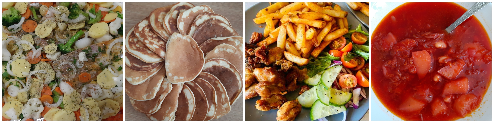

Pagină dedicată pasiunii mele pentru gătit
Ideea creării acesteia a venit în urma acumulării în telefonul meu a peste 100 de imagini cu bucate preparate de mine, pe care doream să le impărtășesc cu cineva, cu o comunitate mai mare de oameni.
Aici puteți găsi diferite rețete, cum ar fi:
